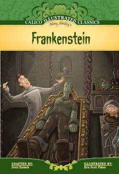

FOlim tomonidan yaratilgan maxluq va uning fojiali taqdiri haqidagi klassik asar.
Ushbu asar yosh olim Viktor Frankenshteynning hayot baxsh etuvchi sirli tajribasi va uning yaratgan maxluqi keltirib chiqargan fojiali oqibatlari haqida hikoya qiladi. Kitob insoniyatning tabiat qonunlariga aralashuvi va axloqiy mas'uliyat mavzularini chuqur yoritib beradi.